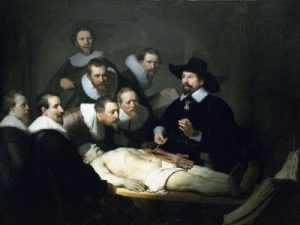
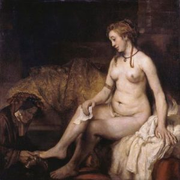

REMBRANDT
Reseña
El artista más importante de Holanda nació en 1606 en Leida y era hijo de un acaudalado molinero. A la edad de dieciocho años, Rembrandt Harmenszoon van Rijn se trasladó a Ámsterdam para trabajar para Pieter Lastman, un pintor conocido de la época. ... Rembrandt murió en 1669 en la miseria.
Principales Pinturas
La Ronda de Noche. 1642. Rijksmuseum en Amsterdam
La tormenta en el mar de Galilea. 1663
Autorretrato con dos círculos. 1665-1669. Kenwood House in London.
Lección de anatomía del Dr. Nicolaes Tulp. 1632. Mauritshuis art museum en La Haya.

Betsabé en su baño. 1654. Museo del Louvre de París.
